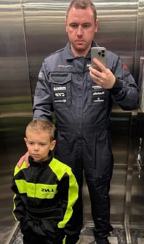
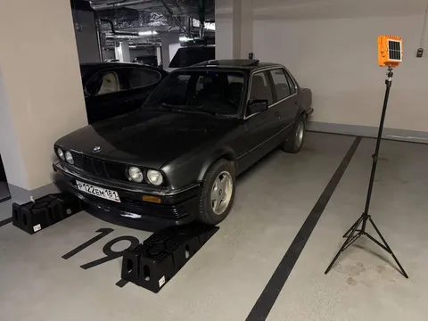
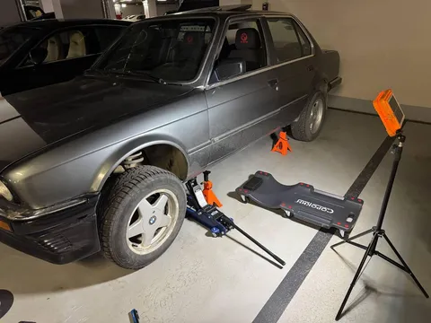
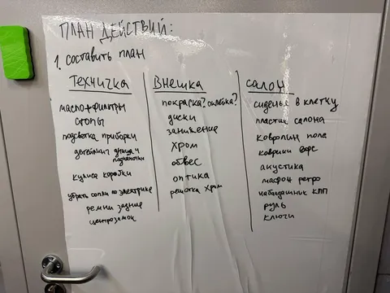

... - составить план (done). Это понедельничная рубрика #лёха_строит_бэху, и за эти выходные мы успели следующее:
- Примерить рабочие комбинезоны (у сына - картинговый, потому что детский рабочий комбез я найти не смог).
- Распаковать покупки - домкрат, подставки, лежаки, динамометрические ключи, свет и многое другое.
- Выяснить, что пока решительно непонятно, как использовать рампы на гладком полу паркинга - при попытке въехать они вылетают из-под машины.
- Провести диагностический осмотр машины, чтобы на его основе начать составлять план действий.
- Наклеить на дверь кладовки маркерную пленку и зафиксировать на ней тот самый план.
- Демонтировать колхозные будильники показателей смесеобразования и вольтажа со стойки крыши.
- Демонтировать нештатный фаркоп и насадку на глушитель.
- Записаться в гаи на постановку на учет, сделать страховку и диагностическую карту.
- Вытащить из-за спинки заднего дивана ремни безопасности, которыми в этой машине явно никто не пользовался.
И еще по мелочи. Пока ничего не понятно, но очень интересно. Хотя нет, понятно, что работы там - мама дорогая! Результатов пока немного, но база есть - на следующих выходных будет чем заняться более предметно. А что именно мы будем делать - узнаем через неделю. Stay tuned.
